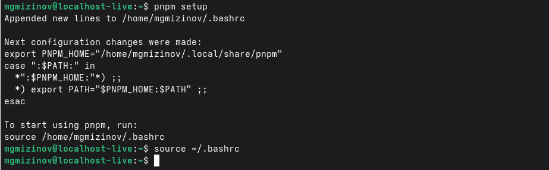
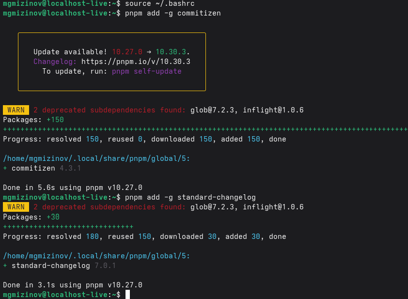
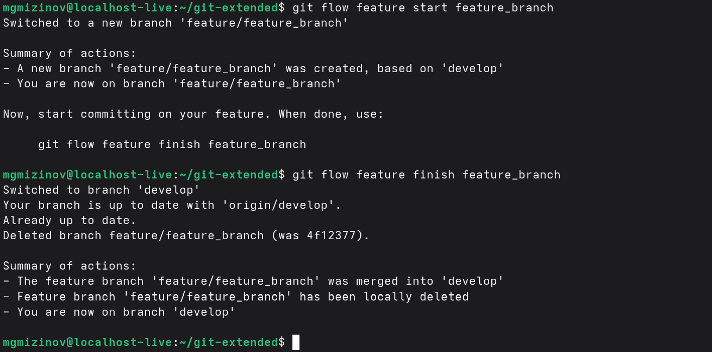
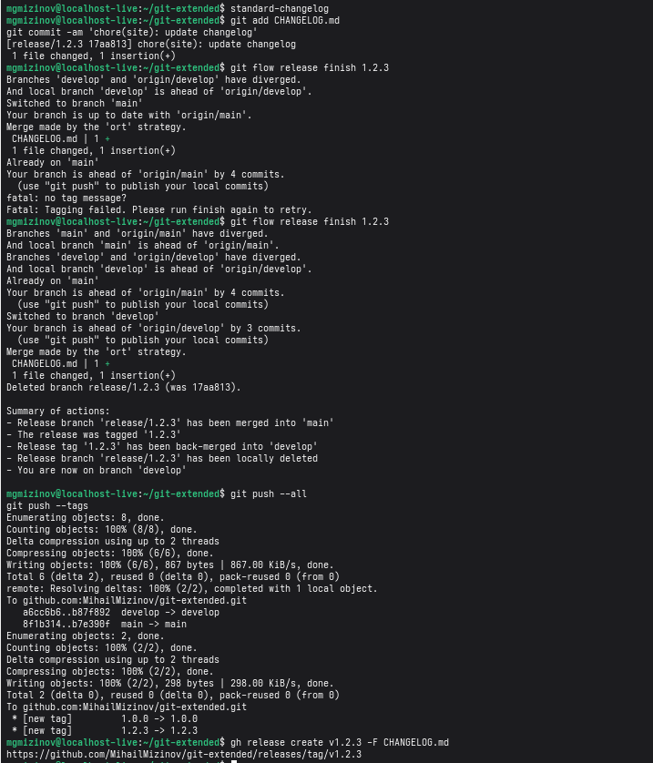

Лабораторная работа 7
Выполнил Мизинов Михаил НКАбд-04-25
Цель работы
Получение навыков правильной работы с репозиториями git.
Задание
Выполнить работу для тестового репозитория. Преобразовать рабочий репозиторий в репозиторий с git-flow и conventional commits.
Выполнение работы
Установка git-flow
Установка Node.js 
Настройка Node.js

Общепринятые коммиты commitizen и standard-changelog

Практический сценарий использования git Создание репозитория git
Подключение репозитория к github 
Конфигурация общепринятых коммитов 
Конфигурация git-flow 
Работа с репозиторием git


Вывод
Полученил необходимые навыки правильной работы с репозиториями git.